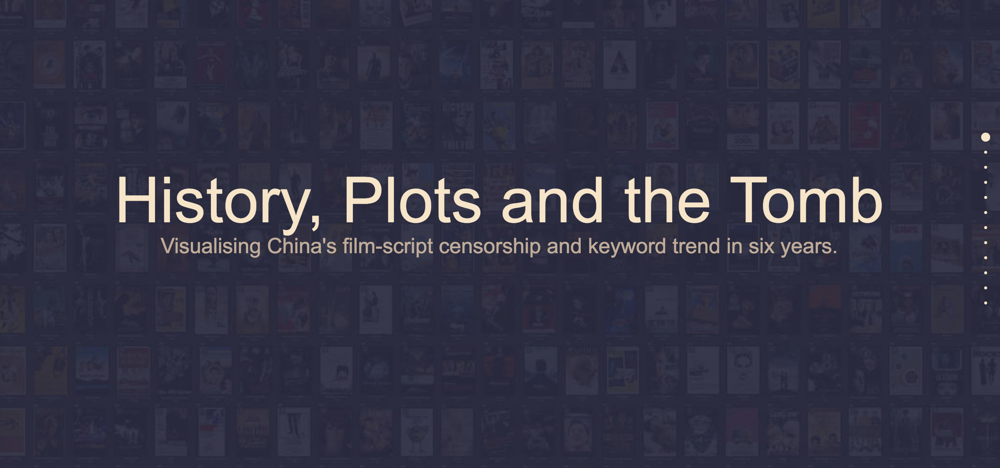

Young Journalist Specializes in Data Visualization and Photography
Twitter
Facebook
Instagram
500px
Email
#Superbowl
Trump vs Obama
Twitter analysis using R
Data journalism: Urban Noise in China
Data journalism: Craft Beer HK
Photography: Sunshine Land Australia
Data Journalism: Work published at FTChinese.com
Multimedia: Food Tour Sydney
Photography: Yunnan in Seven Colors
More works
Multimedia: Study-abroad Agency in China

Data journalism: Film Script Censorship in China
Photography: the Tale of Ice City